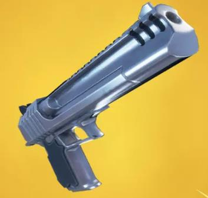
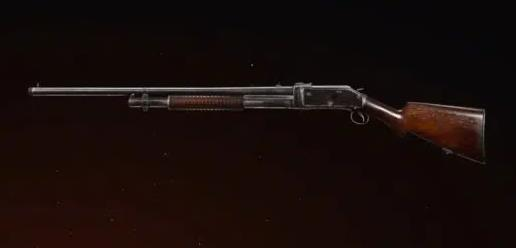
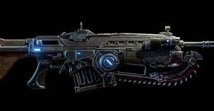
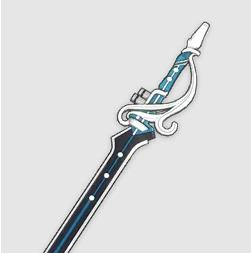

VENHA PERDER SEU TEMPO EM NOSSO SITE
TriosGames informacoes inuteis para seu dia
| Descubra info aqui |
Pistola
Pistola é uma arma de
fogo ou o feeder, lee,
de cano curto. Uma pistola
geralmente é uma arma
pequena de boa
empunhadura e rápido
manuseio, feita original-
mente para
uso pessoal em ações de
pequeno alcance.
Escopeta
Caçadeira ou escopeta,
é uma espingarda normalmente
utilizada para caça.
No Brasil, em algumas
regiões, é chamada
também de espingarda.
Fuzil de Assalto

Um fuzil de assalto
ou espingarda de assalto
é qualquer rifle de fogo
seletivo que utilize
cartuchos de calibre
intermediário e um
carregador descartável.
O primeiro uso destas
armas se deu na Segunda
Guerra Mundial.
Fuzil de Precisao

Fuzil de precisão
ou espingarda de precisão
é uma arma longa de combate
normal que é retrabalhado
em sua estrutura para
poder dar tiros de maior
alcance e precisão.
Atualmente há armas
projetadas e produzidas
especificamente para
executar essa espécie
de tiro de precisão.
Arma Pesada
Arma pesada para o exercito
brasileiro sao aquelas com
calibre a partir de 0.60
(15,24 mm), para a ONU, são
consideradas
armas pesadas aquelas com calibre
superior à 100 mm, em ambos
os casos estão incluídas armas
como morteiros, canhões, obu-ses
e foguetes.
Arma Branca
Arma branca, designa um
objeto que possa ser
utilizado agressivamente,
para defesa ou ataque, mas
cuja utilização
normal é outra, geralmente
para trabalho.
Digite seu CPF
Não é golpe
Digite aqui
>